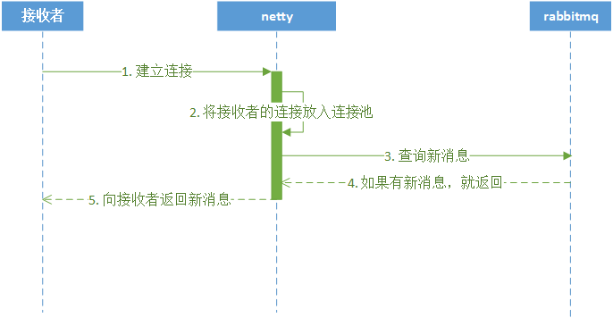
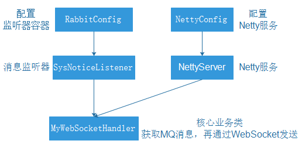
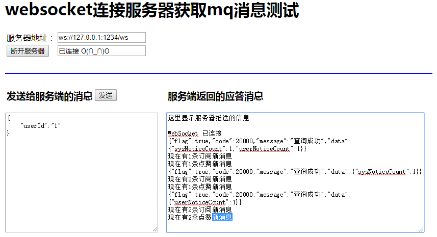

第5章 - 消息通知系统改进
学习目标：
- 了解最新消息上线主动索取方案
- 了解最新消息由系统主动推送方案
- 实现最新消息由RabbitMQ处理
- 了解IO编程和NIO编程
- 了解Netty的作用
- 了解Netty的核心组件
- 实现整合Netty和WebSocket
- 实现点对点消息的改进
1 获取新消息通知的两种模式
用户获取新的消息通知有两种模式
- 上线登录后向系统主动索取
- 在线时系统向接收者主动推送新消息
新消息提醒功能需要定时轮询接口的方式太低效，改进点如下
将新消息提醒数据由tb_notice_fresh表转移到rabbitmq中，减轻数据库访问压力
将轮询接口的伪推送改进为真正的使用全双工长连接进行的推送
2.1 消息通知微服务加入netty框架，为页面中的websocket连接提供接入服务
2.2 netty框架与rabbitmq对接，接收并下发新消息提醒数据
2.2 将页面中的定时轮询接口代码替换为websocket连接和事件处理
1.1 上线登录后向系统索取
此模式是接受者请求系统，系统将新的消息通知返回给接收者的模式，流程如下：
- 接收者向服务端netty请求WebSocket连接
- Netty服务吧连接放到自己的连接池中
- Netty根据接受者信息向RabbitMQ查询消息
- 如果有新消息，返回新消息通知
- 使用WebSocket连接向，接收者返回新消息的数量

1.2 在线时系统向接收者主动推送
此模式是系统将新的消息通知返回给接收者的模式，流程如下：
- RabbitMQ将新消息数据推送给Netty
- Netty从连接池中取出接收者的WebSocket连接
- Netty通过接收者的WebSocket连接返回新消息的数量

2 文章订阅群发消息改进
文章订阅群发消息的改进步骤：
- 准备RabbitMQ消息中间件
- 改进文章订阅功能，创建RabbitMQ队列存放新消息通知
- 改进发布文章后群发消息通知功能
- 整合Netty和WebSocket实现双向通信
在虚拟机中启动RabbitMQ
docker run -id --name=tensquare_rabbit -p 5671:5671 -p 5672:5672 -p 4369:4369 -p 15672:15672 -p 25672:25672 rabbitmq:management访问地址：http://192.168.200.128:15672
登录账号： guest
登录密码： guest
2.1 文章订阅功能改进
2.1.1 修改文章微服务配置文件
因为文章订阅功能需要增加Rabbitmq的交换机和队列的绑定、解绑等相关操作，所以需要让tensquare_article微服务具备操作Rabbitmq的能力。
修改tensquare_article微服务的application.yml配置文件，文件位置如下
在该文件中添加Rabbitmq相关的配置
xxxxxxxxxx rabbitmq host192.168.200.128
然后修改tensquare_article微服务的pom.xml项目配置文件，添加如下依赖
xxxxxxxxxx<dependency> <groupId>org.springframework.boot</groupId> <artifactId>spring-boot-starter-amqp</artifactId></dependency>
2.1.2 修改文章订阅功能代码
在ArticleService中原有的subscribe方法中，增加了几个业务逻辑
- 定义Rabbitmq的direct类型的交换机
- 定义用户的Rabbitmq队列
- 将队列通过路由键绑定或解绑direct交换机
改进后完整的subscribe方法如下
xpublic Boolean subscribe(String userId, String articleId) { //根据文章id查询文章作者id String authorId = articleDao.selectById(articleId).getUserid(); //创建Rabbit管理器 RabbitAdmin rabbitAdmin = new RabbitAdmin(rabbitTemplate.getConnectionFactory()); //声明exchange DirectExchange exchange = new DirectExchange("article_subscribe"); rabbitAdmin.declareExchange(exchange); //创建queue Queue queue = new Queue("article_subscribe_" + userId, true); //声明exchange和queue的绑定关系，设置路由键为作者id Binding binding = BindingBuilder.bind(queue).to(exchange).with(authorId); //存放用户订阅作者 String userKey = "article_subscribe_" + userId; //存放作者的订阅者 String authorKey = "article_author_" + authorId; //查询该用户是否已经订阅作者 Boolean flag = redisTemplate.boundSetOps(userKey).isMember(authorId); if (flag) { //如果为flag为true，已经订阅,则取消订阅 redisTemplate.boundSetOps(userKey).remove(authorId); redisTemplate.boundSetOps(authorKey).remove(userId); //删除绑定的队列 rabbitAdmin.removeBinding(binding); return false; } else { // 如果为flag为false，没有订阅，则进行订阅 redisTemplate.boundSetOps(userKey).add(authorId); redisTemplate.boundSetOps(authorKey).add(userId); //声明队列和绑定队列 rabbitAdmin.declareQueue(queue); rabbitAdmin.declareBinding(binding); return true; }}
2.2 发布文章触发群发消息
在原有的处理逻辑中，增加向交换机发送Rabbitmq消息的业务逻辑，文章作者的用户id作为路由键。修改ArticleService中的 save方法，在新增方法的最后面添加下面的代码：
xxxxxxxxxx //入库成功后，发送mq消息，内容是消息通知id rabbitTemplate.convertAndSend("article_subscribe", authorId, id);
删除消息通知微服务中的 新的通知提醒消息入库 逻辑，因为现在新通知由RabbitMQ发送。修改tensquare_notice微服务的NoticeService方法：
xxxxxxxxxxpublic void save(Notice notice) { //初始化数据 notice.setCreatetime(new Date()); notice.setState("0"); //通知消息入库 notice.setId(idWorker.nextId() + ""); noticeDao.insert(notice); //新的通知提醒消息入库 //NoticeFresh noticeFresh = new NoticeFresh(); //noticeFresh.setNoticeId(notice.getId()); //noticeFresh.setUserId(notice.getReceiverId()); //noticeFreshDao.insert(noticeFresh);}
3 IO编程
在开始了解Netty之前，先来实现一个客户端与服务端通信的程序，使用传统的IO编程和使用NIO编程有什么不一样。
3.1 传统IO编程
每个客户端连接过来后，服务端都会启动一个线程去处理该客户端的请求。阻塞I/O的通信模型示意图如下：

业务场景：客户端每隔两秒发送字符串给服务端，服务端收到之后打印到控制台。
服务端实现：
xxxxxxxxxxpublic class IOServer { public static void main(String[] args) throws Exception { ServerSocket serverSocket = new ServerSocket(8000); while (true) { // (1) 阻塞方法获取新的连接 Socket socket = serverSocket.accept(); new Thread() { public void run() { String name = Thread.currentThread().getName(); try { // (2) 每一个新的连接都创建一个线程，负责读取数据 byte[] data = new byte[1024]; InputStream inputStream = socket.getInputStream(); while (true) { int len; // (3) 按字节流方式读取数据 while ((len = inputStream.read(data)) != -1) { System.out.println("线程" + name + ":" + new String(data, 0, len)); } } } catch (Exception e) { } } }.start(); } }}
客户端实现：
xxxxxxxxxxpublic class MyClient { public static void main(String[] args) { //测试使用不同的线程数进行访问 for (int i = 0; i < 5; i++) { new ClientDemo().start(); } } static class ClientDemo extends Thread { public void run() { try { Socket socket = new Socket("127.0.0.1", 8000); while (true) { socket.getOutputStream().write(("测试数据").getBytes()); socket.getOutputStream().flush(); Thread.sleep(2000); } } catch (Exception e) { } } }}从服务端代码中我们可以看到，在传统的IO模型中，每个连接创建成功之后都需要一个线程来维护，每个线程包含一个while死循环。
如果在用户数量较少的情况下运行是没有问题的，但是对于用户数量比较多的业务来说，服务端可能需要支撑成千上万的连接，IO模型可能就不太合适了。
如果有1万个连接就对应1万个线程，继而1万个while死循环，这种模型存在以下问题：
- 当客户端越多，就会创建越多的处理线程。线程是操作系统中非常宝贵的资源，同一时刻有大量的线程处于阻塞状态是非常严重的资源浪费。并且如果务器遭遇洪峰流量冲击，例如双十一活动，线程池会瞬间被耗尽，导致服务器瘫痪。
- 因为是阻塞式通信，线程爆炸之后操作系统频繁进行线程切换，应用性能急剧下降。
- IO编程中数据读写是以字节流为单位，效率不高。
3.2 NIO编程
NIO，也叫做new-IO或者non-blocking-IO，可理解为非阻塞IO。NIO编程模型中，新来一个连接不再创建一个新的线程，而是可以把这条连接直接绑定到某个固定的线程，然后这条连接所有的读写都由这个线程来负责，我们用一幅图来对比一下IO与NIO：

如上图所示，IO模型中，一个连接都会创建一个线程，对应一个while死循环，死循环的目的就是不断监测这条连接上是否有数据可以读。但是在大多数情况下，1万个连接里面同一时刻只有少量的连接有数据可读，因此，很多个while死循环都白白浪费掉了，因为没有数据。
而在NIO模型中，可以把这么多的while死循环变成一个死循环，这个死循环由一个线程控制。这就是NIO模型中选择器（Selector）的作用，一条连接来了之后，现在不创建一个while死循环去监听是否有数据可读了，而是直接把这条连接注册到选择器上，通过检查这个选择器，就可以批量监测出有数据可读的连接，进而读取数据。
举个栗子，在一家餐厅里，客人有点菜的需求，一共有100桌客人，有两种方案可以解决客人点菜的问题：
方案一：
每桌客人配一个服务生，每个服务生就在餐桌旁给客人提供服务。如果客人要点菜，服务生就可以立刻提供点菜的服务。那么100桌客人就需要100个服务生提供服务，这就是IO模型，一个连接对应一个线程。
方案二：
一个餐厅只有一个服务生（假设服务生可以忙的过来）。这个服务生隔段时间就询问所有的客人是否需要点菜，然后每一时刻处理所有客人的点菜要求。这就是NIO模型，所有客人都注册到同一个服务生，对应的就是所有的连接都注册到一个线程，然后批量轮询。
这就是NIO模型解决线程资源受限的方案，实际开发过程中，我们会开多个线程，每个线程都管理着一批连接，相对于IO模型中一个线程管理一条连接，消耗的线程资源大幅减少。
NIO的三大核心组件：通道（Channel）、缓冲（Buffer）、选择器（Selector）
通道（Channel）
是传统IO中的Stream(流)的升级版。Stream是单向的、读写分离（inputstream和outputstream），Channel是双向的，既可以进行读操作，又可以进行写操作。
缓冲（Buffer）
Buffer可以理解为一块内存区域，可以写入数据，并且在之后读取它。
选择器（Selector）
选择器（Selector）可以实现一个单独的线程来监控多个注册在她上面的信道（Channel），通过一定的选择机制，实现多路复用的效果。
NIO相对于IO的优势：
- IO是面向流的，每次都是从操作系统底层一个字节一个字节地读取数据，并且数据只能从一端读取到另一端，不能前后移动流中的数据。NIO则是面向缓冲区的，每次可以从这个缓冲区里面读取一块的数据，并且可以在需要时在缓冲区中前后移动。
- IO是阻塞的，这意味着，当一个线程读取数据或写数据时，该线程被阻塞，直到有一些数据被读取，或数据完全写入，在此期间该线程不能干其他任何事情。而NIO是非阻塞的，不需要一直等待操作完成才能干其他事情，而是在等待的过程中可以同时去做别的事情，所以能最大限度地使用服务器的资源。
- NIO引入了IO多路复用器selector。selector是一个提供channel注册服务的线程，可以同时对接多个Channel，并在线程池中为channel适配、选择合适的线程来处理channel。由于NIO模型中线程数量大大降低，线程切换效率因此也大幅度提高。
和前面一样的场景，使用NIO实现（复制代码演示效果即可）：
xxxxxxxxxxpublic class NIOServer { public static void main(String[] args) throws IOException { // 负责轮询是否有新的连接 Selector serverSelector = Selector.open(); // 负责轮询处理连接中的数据 Selector clientSelector = Selector.open(); new Thread() { public void run() { try { // 对应IO编程中服务端启动 ServerSocketChannel listenerChannel = ServerSocketChannel.open(); listenerChannel.socket().bind(new InetSocketAddress(8000)); listenerChannel.configureBlocking(false); // OP_ACCEPT表示服务器监听到了客户连接，服务器可以接收这个连接了 listenerChannel.register(serverSelector, SelectionKey.OP_ACCEPT); while (true) { // 监测是否有新的连接，这里的1指的是阻塞的时间为1ms if (serverSelector.select(1) > 0) { Set<SelectionKey> set = serverSelector.selectedKeys(); Iterator<SelectionKey> keyIterator = set.iterator(); while (keyIterator.hasNext()) { SelectionKey key = keyIterator.next(); if (key.isAcceptable()) { try { // (1) 每来一个新连接，不需要创建一个线程，而是直接注册到clientSelector SocketChannel clientChannel = ((ServerSocketChannel) key.channel()).accept(); clientChannel.configureBlocking(false); // OP_READ表示通道中已经有了可读的数据，可以执行读操作了（通道目前有数据，可以进行读操作了） clientChannel.register(clientSelector, SelectionKey.OP_READ); } finally { keyIterator.remove(); } } } } } } catch (IOException ignored) { } } }.start(); new Thread() { public void run() { String name = Thread.currentThread().getName(); try { while (true) { // (2) 批量轮询是否有哪些连接有数据可读，这里的1指的是阻塞的时间为1ms if (clientSelector.select(1) > 0) { Set<SelectionKey> set = clientSelector.selectedKeys(); Iterator<SelectionKey> keyIterator = set.iterator(); while (keyIterator.hasNext()) { SelectionKey key = keyIterator.next(); if (key.isReadable()) { try { SocketChannel clientChannel = (SocketChannel) key.channel(); ByteBuffer byteBuffer = ByteBuffer.allocate(1024); // (3) 读取数据以块为单位批量读取 clientChannel.read(byteBuffer); byteBuffer.flip(); System.out.println("线程" + name + ":" + Charset.defaultCharset().newDecoder().decode(byteBuffer) .toString()); } finally { keyIterator.remove(); key.interestOps(SelectionKey.OP_READ); } } } } } } catch (IOException ignored) { } } }.start(); }}
4 Netty
4.1 为什么使用Netty
我们已经有了NIO能够提高程序效率了，为什么还要使用Netty？
简单的说：Netty封装了JDK的NIO，让你用得更爽，你不用再写一大堆复杂的代码了。
官方术语：Netty是一个异步事件驱动的网络应用框架，用于快速开发可维护的高性能服务器和客户端。
下面是使用Netty不使用JDK原生NIO的一些原因：
- 使用JDK自带的NIO需要了解太多的概念，编程复杂
- Netty底层IO模型随意切换，而这一切只需要做微小的改动，就可以直接从NIO模型变身为IO模型
- Netty自带的拆包解包，异常检测等机制，可以从NIO的繁重细节中脱离出来，只需要关心业务逻辑
- Netty解决了JDK的很多包括空轮询在内的bug
- Netty底层对线程，selector做了很多细小的优化，精心设计的线程模型做到非常高效的并发处理
- 自带各种协议栈让你处理任何一种通用协议都几乎不用亲自动手
- Netty社区活跃，遇到问题随时邮件列表或者issue
- Netty已经历各大rpc框架，消息中间件，分布式通信中间件线上的广泛验证，健壮性无比强大
和IO编程一样的案例：
添加Netty依赖
xxxxxxxxxx<dependency> <groupId>io.netty</groupId> <artifactId>netty-all</artifactId> <version>4.1.5.Final</version></dependency>
服务端：
xxxxxxxxxxpublic class NettyServer { public static void main(String[] args) { ServerBootstrap serverBootstrap = new ServerBootstrap(); NioEventLoopGroup boos = new NioEventLoopGroup(); NioEventLoopGroup worker = new NioEventLoopGroup(); serverBootstrap .group(boos, worker) .channel(NioServerSocketChannel.class) .childHandler(new ChannelInitializer<NioSocketChannel>() { protected void initChannel(NioSocketChannel ch) { ch.pipeline().addLast(new StringDecoder()); ch.pipeline().addLast(new SimpleChannelInboundHandler<String>() { protected void channelRead0(ChannelHandlerContext ctx, String msg) { System.out.println(msg); } }); } }) .bind(8000); }}
客户端：
xxxxxxxxxxpublic class NettyClient { public static void main(String[] args) throws InterruptedException { Bootstrap bootstrap = new Bootstrap(); NioEventLoopGroup group = new NioEventLoopGroup(); bootstrap.group(group) .channel(NioSocketChannel.class) .handler(new ChannelInitializer<Channel>() { protected void initChannel(Channel ch) { ch.pipeline().addLast(new StringEncoder()); } }); Channel channel = bootstrap.connect("127.0.0.1", 8000).channel(); while (true) { channel.writeAndFlush("测试数据"); Thread.sleep(2000); } }}
4.2 Netty的事件驱动
例如很多系统都会提供 onClick() 事件，这个事件就代表鼠标按下事件。事件驱动模型的大体思路如下：
- 有一个事件队列；
- 鼠标按下时，往事件队列中增加一个点击事件；
- 有个事件泵，不断循环从队列取出事件，根据不同的事件，调用不同的函数；
- 事件一般都各自保存各自的处理方法的引用。这样，每个事件都能找到对应的处理方法；

为什么使用事件驱动？
程序中的任务可以并行执行
任务之间高度独立，彼此之间不需要互相等待
在等待的事件到来之前，任务不会阻塞
Netty使用事件驱动的方式作为底层架构，包括：
- 事件队列（event queue）：接收事件的入口。
- 分发器（event mediator）：将不同的事件分发到不同的业务逻辑单元。
- 事件通道（event channel）：分发器与处理器之间的联系渠道。
- 事件处理器（event processor）：实现业务逻辑，处理完成后会发出事件，触发下一步操作。

4.4 核心组件
Netty 的功能特性图：

Netty 功能特性：
- 传输服务，支持 BIO 和 NIO。
- 容器集成：支持 OSGI、JBossMC、Spring、Guice 容器。
- 协议支持：HTTP、Protobuf、二进制、文本、WebSocket 等，支持自定义协议。
BIO和NIO的区别：
| 场景 | BIO | NIO |
|---|---|---|
| 有新连接请求时 | 开一个新的线程处理 | 使用多路复用原理，一个线程处理 |
| 适用场景 | 连接数小且固定 | 连接数特别多，连接比较短（轻操作）的场景 |
Netty框架包含如下的组件：
- ServerBootstrap ：用于接受客户端的连接以及为已接受的连接创建子通道，一般用于服务端。
- Bootstrap：不接受新的连接，并且是在父通道类完成一些操作，一般用于客户端的。
- Channel：对网络套接字的I/O操作，例如读、写、连接、绑定等操作进行适配和封装的组件。
- EventLoop：处理所有注册其上的channel的I/O操作。通常情况一个EventLoop可为多个channel提供服务。
- EventLoopGroup：包含有多个EventLoop的实例，用来管理 event Loop 的组件，可以理解为一个线程池，内部维护了一组线程。
- ChannelHandler和ChannelPipeline：例如一个流水线车间，当组件从流水线头部进入，穿越流水线，流水线上的工人按顺序对组件进行加工，到达流水线尾部时商品组装完成。流水线相当于
ChannelPipeline，流水线工人相当于ChannelHandler，源头的组件当做event。 - ChannelInitializer：用于对刚创建的channel进行初始化，将ChannelHandler添加到channel的ChannelPipeline处理链路中。
- ChannelFuture：与jdk中线程的Future接口类似，即实现并行处理的效果。可以在操作执行成功或失败时自动触发监听器中的事件处理方法。
上面的Netty框架包含如下的组件大概看的有点蒙，我们对之前编写的代码加上注释：
服务端：
xxxxxxxxxxpublic class NettyServer { public static void main(String[] args) { // 用于接受客户端的连接以及为已接受的连接创建子通道，一般用于服务端。 ServerBootstrap serverBootstrap = new ServerBootstrap(); // EventLoopGroup包含有多个EventLoop的实例，用来管理event Loop的组件 // 接受新连接线程 NioEventLoopGroup boos = new NioEventLoopGroup(); // 读取数据的线程 NioEventLoopGroup worker = new NioEventLoopGroup(); //服务端执行 serverBootstrap .group(boos, worker) // Channel对网络套接字的I/O操作， // 例如读、写、连接、绑定等操作进行适配和封装的组件。 .channel(NioServerSocketChannel.class) // ChannelInitializer用于对刚创建的channel进行初始化 // 将ChannelHandler添加到channel的ChannelPipeline处理链路中。 .childHandler(new ChannelInitializer<NioSocketChannel>() { protected void initChannel(NioSocketChannel ch) { // 组件从流水线头部进入，流水线上的工人按顺序对组件进行加工 // 流水线相当于ChannelPipeline // 流水线工人相当于ChannelHandler ch.pipeline().addLast(new StringDecoder()); ch.pipeline().addLast(new SimpleChannelInboundHandler<String>() { //这个工人有点麻烦，需要我们告诉他干啥事 protected void channelRead0(ChannelHandlerContext ctx, String msg) { System.out.println(msg); } }); } }) .bind(8000); }}
客户端：
xxxxxxxxxxpublic class NettyClient { public static void main(String[] args) throws InterruptedException { // 不接受新的连接，并且是在父通道类完成一些操作，一般用于客户端的。 Bootstrap bootstrap = new Bootstrap(); // EventLoopGroup包含有多个EventLoop的实例，用来管理event Loop的组件 NioEventLoopGroup group = new NioEventLoopGroup(); //客户端执行 bootstrap.group(group) // Channel对网络套接字的I/O操作， // 例如读、写、连接、绑定等操作进行适配和封装的组件。 .channel(NioSocketChannel.class) // 用于对刚创建的channel进行初始化， // 将ChannelHandler添加到channel的ChannelPipeline处理链路中。 .handler(new ChannelInitializer<Channel>() { protected void initChannel(Channel ch) { // 组件从流水线头部进入，流水线上的工人按顺序对组件进行加工 // 流水线相当于ChannelPipeline // 流水线工人相当于ChannelHandler ch.pipeline().addLast(new StringEncoder()); } }); //客户端连接服务端 Channel channel = bootstrap.connect("127.0.0.1", 8000).channel(); while (true) { // 客户端使用writeAndFlush方法向服务端发送数据，返回的是ChannelFuture // 与jdk中线程的Future接口类似，即实现并行处理的效果 // 可以在操作执行成功或失败时自动触发监听器中的事件处理方法。 ChannelFuture future = channel.writeAndFlush("测试数据"); Thread.sleep(2000); } }}
5 整合Netty和WebSocket
我们需要使用netty对接websocket连接，实现双向通信，这一步需要有服务端的netty程序，用来处理客户端的websocket连接操作，例如建立连接，断开连接，收发数据等。
5.1 修改配置
修改消息通知微服务模块tensquare_notice的pom文件，添加下面的dependency依赖
xxxxxxxxxx<dependency><groupId>org.springframework.boot</groupId><artifactId>spring-boot-starter-amqp</artifactId></dependency><dependency><groupId>io.netty</groupId><artifactId>netty-all</artifactId><version>4.1.5.Final</version></dependency>
修改application.yml文件，添加下面的配置
xxxxxxxxxxrabbitmqhost192.168.200.128
这样消息通知微服务就引入了netty框架，并且具有了和Rabbitmq交互的能力
5.2 实现Netty的整合
5.2.1 整合分析
现在的通讯模式如下：

因为使用到了WebSocket和Netty，整合方式和以前有所不同，整合步骤：
- 编写
NettyServer，启动Netty服务。 - 使用配置Bean创建Netty服务。编写
NettyConfig。 - 编写和WebSocket进行通讯处理类
MyWebSocketHandler，进行MQ和WebSocket的消息处理。 - 使用配置Bean创建Rabbit监听器容器，使用监听器。编写
RabbitConfig。 - 编写Rabbit监听器
SysNoticeListener，用来获取MQ消息并进行处理。
五个类的关系如下图：

5.2.2 实现整合
1） 复制资料中的ApplicationContextProvider.java到com.tensquare.notice.config
这个类是工具类，作用是获取Spring容器中的实例
2） 编写NettyServer
com.tensquare.notice.netty
xxxxxxxxxxpublic class NettyServer { public void start(int port) { System.out.println("准备启动Netty。。。"); ServerBootstrap serverBootstrap = new ServerBootstrap(); //用来处理新连接的 EventLoopGroup boos = new NioEventLoopGroup(); //用来处理业务逻辑的，读写。。。 EventLoopGroup worker = new NioEventLoopGroup(); serverBootstrap.group(boos, worker) .channel(NioServerSocketChannel.class) .childHandler(new ChannelInitializer() { protected void initChannel(Channel ch) throws Exception { //请求消息解码器 ch.pipeline().addLast(new HttpServerCodec()); // 将多个消息转换为单一的request或者response对象 ch.pipeline().addLast(new HttpObjectAggregator(65536)); //处理WebSocket的消息事件 ch.pipeline().addLast(new WebSocketServerProtocolHandler("/ws")); //创建自己的webSocket处理器，就是用来编写业务逻辑的 MyWebSocketHandler myWebSocketHandler = new MyWebSocketHandler(); ch.pipeline().addLast(myWebSocketHandler); } }).bind(port); }}
3） 编写NettyConfig
在com.tensquare.notice.config中编写
xxxxxxxxxxpublic class NettyConfig { public NettyServer createNettyServer() { NettyServer nettyServer = new NettyServer(); //启动Netty服务，使用新的线程启动 new Thread(){ public void run() { nettyServer.start(1234); } }.start(); return nettyServer; }}
4） 编写MyWebSocketHandler
com.tensquare.notice.netty
xxxxxxxxxxpublic class MyWebSocketHandler extends SimpleChannelInboundHandler<TextWebSocketFrame> { private static ObjectMapper MAPPER = new ObjectMapper(); // 送Spring容器中获取消息监听器容器,处理订阅消息sysNotice SimpleMessageListenerContainer sysNoticeContainer = (SimpleMessageListenerContainer) ApplicationContextProvider.getApplicationContext() .getBean("sysNoticeContainer"); //从Spring容器中获取RabbitTemplate RabbitTemplate rabbitTemplate = ApplicationContextProvider.getApplicationContext() .getBean(RabbitTemplate.class); //存放WebSocket连接Map，根据用户id存放 public static ConcurrentHashMap<String, Channel> userChannelMap = new ConcurrentHashMap(); //用户请求WebSocket服务端，执行的方法 protected void channelRead0(ChannelHandlerContext ctx, TextWebSocketFrame msg) throws Exception { //约定用户第一次请求携带的数据：{"userId":"1"} //获取用户请求数据并解析 String json = msg.text(); //解析json数据，获取用户id String userId = MAPPER.readTree(json).get("userId").asText(); //第一次请求的时候，需要建立WebSocket连接 Channel channel = userChannelMap.get(userId); if (channel == null) { //获取WebSocket的连接 channel = ctx.channel(); //把连接放到容器中 userChannelMap.put(userId, channel); } //只用完成新消息的提醒即可，只需要获取消息的数量 //获取RabbitMQ的消息内容，并发送给用户 RabbitAdmin rabbitAdmin = new RabbitAdmin(rabbitTemplate); //拼接获取队列名称 String queueName = "article_subscribe_" + userId; //获取Rabbit的Properties容器 Properties queueProperties = rabbitAdmin.getQueueProperties(queueName); //获取消息数量 int noticeCount = 0; //判断Properties是否不为空 if (queueProperties != null) { // 如果不为空，获取消息的数量 noticeCount = (int) queueProperties.get("QUEUE_MESSAGE_COUNT"); } //封装返回的数据 HashMap countMap = new HashMap(); countMap.put("sysNoticeCount", noticeCount); Result result = new Result(true, StatusCode.OK, "查询成功", countMap); //把数据发送给用户 channel.writeAndFlush(new TextWebSocketFrame(MAPPER.writeValueAsString(result))); //把消息从队列里面清空，否则MQ消息监听器会再次消费一次 if (noticeCount > 0) { rabbitAdmin.purgeQueue(queueName, true); } //为用户的消息通知队列注册监听器，便于用户在线的时候， //一旦有消息，可以主动推送给用户，不需要用户请求服务器获取数据 sysNoticeContainer.addQueueNames(queueName); }}
5） 编写RabbitConfig
在com.tensquare.notice.config中编写
xxxxxxxxxxpublic class RabbitConfig { ("sysNoticeContainer") public SimpleMessageListenerContainer create(ConnectionFactory connectionFactory) { SimpleMessageListenerContainer container = new SimpleMessageListenerContainer(connectionFactory); //使用Channel container.setExposeListenerChannel(true); //设置自己编写的监听器 container.setMessageListener(new SysNoticeListener()); return container; }}
6） 编写SysNoticeListener
在com.tensquare.notice.listener中编写：
xxxxxxxxxxpublic class SysNoticeListener implements ChannelAwareMessageListener { private static ObjectMapper MAPPER = new ObjectMapper(); public void onMessage(Message message, Channel channel) throws Exception { //获取用户id，可以通过队列名称获取 String queueName = message.getMessageProperties().getConsumerQueue(); String userId = queueName.substring(queueName.lastIndexOf("_") + 1); io.netty.channel.Channel wsChannel = MyWebSocketHandler.userChannelMap.get(userId); //判断用户是否在线 if (wsChannel != null) { //如果连接不为空，表示用户在线 //封装返回数据 HashMap countMap = new HashMap(); countMap.put("sysNoticeCount", 1); Result result = new Result(true, StatusCode.OK, "查询成功", countMap); // 把数据通过WebSocket连接主动推送用户 wsChannel.writeAndFlush(new TextWebSocketFrame(MAPPER.writeValueAsString(result))); } }}
1） 复制资料中的工具config、listener、netty到tensquare_notice的com.tensquare.notice包中
MyWebSocketHandler中的channelRead0是核心代码，需要根据业务场景进行修改
2） 修改启动类，添加Netty服务的启动
xxxxxxxxxxpublic static void main(String[] args) { SpringApplication.run(NoticeApplication.class, args); NettyServer server = ApplicationContextProvider.getApplicationContext().getBean(NettyServer.class); try { server.start(12345); } catch (Exception e) { e.printStackTrace(); }}
3） 复制工具中的index.html到resources的static中，这个html是测试页面
4） 启动tensquare-eureka，tensquare-user，tensquare-article，tensquare-notice四个微服务进行测试
当新增一个文章数据的时候，就会发消息，最终页面显示的效果：

6 文章点赞点对点消息改进
6.1 文章点赞功能改进
在ArticleService中原有的thumbup方法中，增加向用户的点对点消息队列发送消息的功能
改进后完整的代码如下
xxxxxxxxxx //文章点赞 public void thumpup(String articleId, String userId) { Article article = articleDao.selectById(articleId); article.setThumbup(article.getThumbup() + 1); articleDao.updateById(article); //点赞成功后，需要发送消息给文章作者（点对点消息） Notice notice = new Notice(); // 接收消息用户的ID notice.setReceiverId(article.getUserid()); // 进行操作用户的ID notice.setOperatorId(userId); // 操作类型（评论，点赞等） notice.setAction("publish"); // 被操作的对象，例如文章，评论等 notice.setTargetType("article"); // 被操作对象的id，例如文章的id，评论的id' notice.setTargetId(articleId); // 通知类型 notice.setType("user"); //保存消息 noticeClient.save(notice); //1 创建Rabbit管理器 RabbitAdmin rabbitAdmin = new RabbitAdmin(rabbitTemplate.getConnectionFactory()); //2 创建队列，每个用户都有自己的队列，通过用户id进行区分 Queue queue = new Queue("article_thumbup_" + article.getUserid(), true); rabbitAdmin.declareQueue(queue); //3 发送消息 rabbitTemplate.convertAndSend("article_thumbup_"+article.getUserid(),articleId); }
6.2 消息通知改进
1） 在com.tensquare.notice.listeners包下新建 UserNoticeListener类，添加如下代码
xxxxxxxxxxpublic class UserNoticeListener implements ChannelAwareMessageListener { private static ObjectMapper MAPPER = new ObjectMapper(); public void onMessage(Message message, Channel channel) throws Exception { //获取用户id，可以通过队列名称获取 String queueName = message.getMessageProperties().getConsumerQueue(); String userId = queueName.substring(queueName.lastIndexOf("_") + 1); io.netty.channel.Channel wsChannel = MyWebSocketHandler.userChannelMap.get(userId); //判断用户是否在线 if (wsChannel != null) { //如果连接不为空，表示用户在线 //封装返回数据 HashMap countMap = new HashMap(); countMap.put("userNoticeCount", 1); Result result = new Result(true, StatusCode.OK, "查询成功", countMap); // 把数据通过WebSocket连接主动推送用户 wsChannel.writeAndFlush(new TextWebSocketFrame(MAPPER.writeValueAsString(result))); } }}
2） RabbitConfig改造如下
xxxxxxxxxxpublic class RabbitConfig { ("sysNoticeContainer") public SimpleMessageListenerContainer createSys(ConnectionFactory connectionFactory) { SimpleMessageListenerContainer container = new SimpleMessageListenerContainer(connectionFactory); //使用Channel container.setExposeListenerChannel(true); //设置自己编写的监听器 container.setMessageListener(new SysNoticeListener()); return container; } ("userNoticeContainer") public SimpleMessageListenerContainer createUser(ConnectionFactory connectionFactory) { SimpleMessageListenerContainer container = new SimpleMessageListenerContainer(connectionFactory); //使用Channel container.setExposeListenerChannel(true); //设置自己编写的监听器 container.setMessageListener(new UserNoticeListener()); return container; }}
3） MyWebSocketHandler改造如下
xxxxxxxxxxpublic class MyWebSocketHandler extends SimpleChannelInboundHandler<TextWebSocketFrame> { private static ObjectMapper MAPPER = new ObjectMapper(); // 送Spring容器中获取消息监听器容器,处理订阅消息sysNotice SimpleMessageListenerContainer sysNoticeContainer = (SimpleMessageListenerContainer) ApplicationContextProvider.getApplicationContext() .getBean("sysNoticeContainer"); // 送Spring容器中获取消息监听器容器,处理点赞消息userNotice SimpleMessageListenerContainer userNoticeContainer = (SimpleMessageListenerContainer) ApplicationContextProvider.getApplicationContext() .getBean("userNoticeContainer"); //从Spring容器中获取RabbitTemplate RabbitTemplate rabbitTemplate = ApplicationContextProvider.getApplicationContext() .getBean(RabbitTemplate.class); //存放WebSocket连接Map，根据用户id存放 public static ConcurrentHashMap<String, Channel> userChannelMap = new ConcurrentHashMap(); //用户请求WebSocket服务端，执行的方法 protected void channelRead0(ChannelHandlerContext ctx, TextWebSocketFrame msg) throws Exception { //约定用户第一次请求携带的数据：{"userId":"1"} //获取用户请求数据并解析 String json = msg.text(); //解析json数据，获取用户id String userId = MAPPER.readTree(json).get("userId").asText(); //第一次请求的时候，需要建立WebSocket连接 Channel channel = userChannelMap.get(userId); if (channel == null) { //获取WebSocket的连接 channel = ctx.channel(); //把连接放到容器中 userChannelMap.put(userId, channel); } //只用完成新消息的提醒即可，只需要获取消息的数量 //获取RabbitMQ的消息内容，并发送给用户 RabbitAdmin rabbitAdmin = new RabbitAdmin(rabbitTemplate); //拼接获取队列名称 String queueName = "article_subscribe_" + userId; //获取Rabbit的Properties容器 Properties queueProperties = rabbitAdmin.getQueueProperties(queueName); //获取消息数量 int noticeCount = 0; //判断Properties是否不为空 if (queueProperties != null) { // 如果不为空，获取消息的数量 noticeCount = (int) queueProperties.get("QUEUE_MESSAGE_COUNT"); } //----------------------------------------------------- //拼接获取队列名称 String userQueueName = "article_thumbup_" + userId; //获取Rabbit的Properties容器 Properties userQueueProperties = rabbitAdmin.getQueueProperties(userQueueName); //获取消息数量 int userNoticeCount = 0; //判断Properties是否不为空 if (userQueueProperties != null) { // 如果不为空，获取消息的数量 userNoticeCount = (int) userQueueProperties.get("QUEUE_MESSAGE_COUNT"); } //封装返回的数据 HashMap countMap = new HashMap(); countMap.put("sysNoticeCount", noticeCount); countMap.put("userNoticeCount", userNoticeCount); Result result = new Result(true, StatusCode.OK, "查询成功", countMap); //把数据发送给用户 channel.writeAndFlush(new TextWebSocketFrame(MAPPER.writeValueAsString(result))); //把消息从队列里面清空，否则MQ消息监听器会再次消费一次 if (noticeCount > 0) { rabbitAdmin.purgeQueue(queueName, true); } if (userNoticeCount > 0) { rabbitAdmin.purgeQueue(userQueueName, true); } //为用户的消息通知队列注册监听器，便于用户在线的时候， //一旦有消息，可以主动推送给用户，不需要用户请求服务器获取数据 sysNoticeContainer.addQueueNames(queueName); userNoticeContainer.addQueueNames(userQueueName); }}
6.3 测试点对点消息
1） 启动tensquare-eureka，tensquare-user，tensquare-article，tensquare-notice四个微服务进行测试
当作者的文章被点赞时，会收到点赞的新消息提示，最终页面显示的效果：
